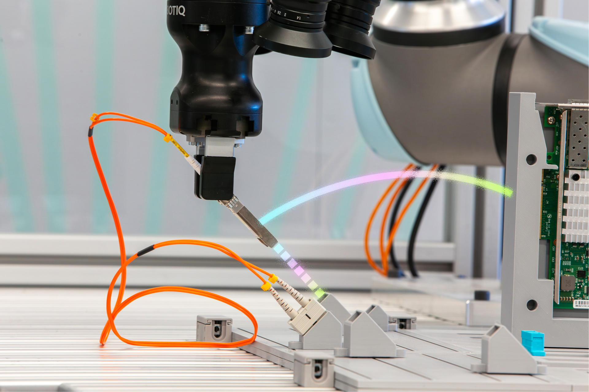
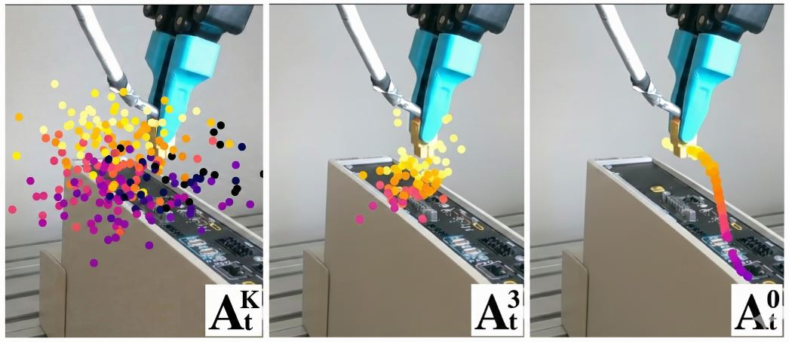
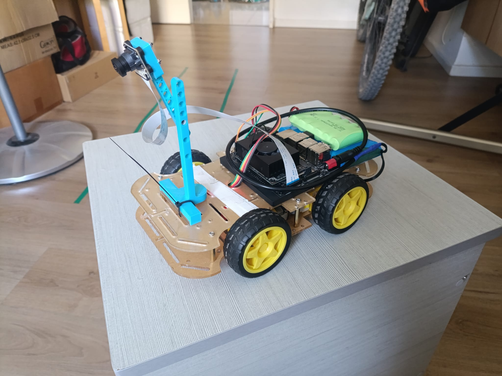
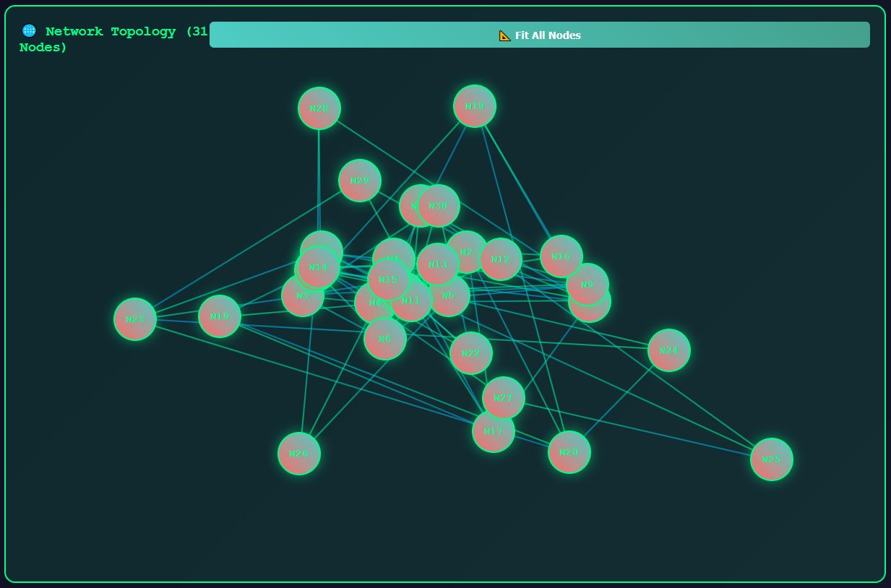

|
Anton Agafonov
I'm a Physical AI Engineer developing multimodal, perception-driven action policies for
real-time robotic systems. My work spans the full Physical AI stack — from designing system
architecture and core algorithmic blocks (action policies, robotic perception, multimodal sensor
fusion) to working hands-on with the physical system itself: integrating and commissioning sensors,
closing the perception-to-action loop on real hardware.
|

|
ProjectsHere are some of my research projects and technical work. |
|
 |
AIC: Sim-to-Real Cable Insertion Challenge
Intrinsic AI for Industry Challenge — Personal Project, 2026 Challenge Repo End-to-end sim-to-real cable insertion stack for Intrinsic's AI for Industry Challenge — UR5e + Robotiq Hand-E with 3 wrist cameras and an ATI F/T sensor inserting SFP plugs into NIC card ports. Built data collection, training, and evaluation pipelines across Gazebo Harmonic (the eval simulator) and Isaac Lab (parallel collection), targeting both qualification phases and the public trials. Key Contributions:
Stack: ROS2 Kilted, Gazebo Harmonic, Isaac Lab / Isaac Sim, LeRobot, PyTorch, MoveIt, OpenCV, MuJoCo. UR5e + Robotiq Hand-E + ATI F/T. Learned the hard way:
|

|
IndustRoPose: Industrial Robotic Pose Estimation
Bosch Corporate Research, 2024-2025 Project Page Real-time 6D pose estimation system for industrial robotic manipulation and assembly tasks, enabling perception-based policies for automated insertion and assembly operations. |
|
 |
Robotic Insertion with Diffusion Policy
Bosch Corporate Research, 2024-2025 Original Paper / Video Implementation and adaptation of the Diffusion Policy framework for real-time robotic insertion tasks using a UR5e cobot. The project demonstrates the application of diffusion-based imitation learning to precision manipulation, translating the original framework to industrial assembly scenarios with closed-loop visuomotor control. |

|
STMPL: Human Body Soft Tissue Deformation Deep Learning Simulation
M.Sc Research Thesis, Technion, 2024 Project Page / Paper Developed the STMPL model, an enhanced version of the SMPL model for realistic simulation of human soft tissue deformations optimized for real-time applications. The model maps 3D body data to 2D UV maps for efficient processing using a UNET-based architecture, achieving real-time inference speeds of 2ms with FEM-level accuracy while generalizing on unseen shapes and thicknesses. |
|
 |
Autonomous Car - Jetson Xavier NX
ROS2-based Autonomous Vehicle Project Github / Original Version / Video Comprehensive autonomous vehicle project built with ROS2 Foxy on NVIDIA Jetson Xavier NX, transforming a basic RC car into an intelligent autonomous vehicle with real-time control and expandable architecture. Key Features:
Technical Implementation: The system uses precise PWM-based differential drive control, comprehensive parameter configuration, and robust command routing with topics for joystick input, manual control commands, and final motor commands. |

|
Autonomous Car
Autonomous Vehicle Project
Github / Video Autonomous vehicle control and navigation system with computer vision and machine learning components for real-time decision making and path planning.
|
|
 |
Bitcoin Blockchain Simulation
Blockchain Technology Demo Demo A toy example of a Bitcoin Blockchain Simulator designed to be an interactive and educational web application. It visually demonstrates the fundamental principles of a cryptocurrency network with multiple nodes. Key Features:
|

|
Oxymeter Service V2
Medical Device Software
Github Medical device service software, combining a hardware interface with real-time signal processing and data analytics. This includes reading data from a finger-worn oximeter device via Raspberry Pi Zero and monitoring cold bath temperature. Future integration will involve camera-based pulse readings using synthetic data from: |
Background |
Areas of Interest |
Physical AI & Robotic Systems
Computer Vision & Perception Diffusion Policies & VLA/VLM Models Multimodal Sensor Fusion Imitation Learning & Action Policies 3D Scene Understanding |
Technical Skills |
Programming: Python, PyTorch, TensorFlow Robotics: ROS2, Isaac Sim, MuJoCo, UR-cobot, Jetson Tools: Linux, Git, Docker, multi-GPU training Specializations: Physical AI, Action Policies, Diffusion Policies, VLA/VLM, 6D Pose Estimation, Multimodal Sensor Fusion, Imitation Learning |
Experience |
Physical AI Engineer - Forsight Robotics (Jan 2026–Present) Developing autonomous robotic systems for ophthalmic surgery — Physical AI stack from architecture to hardware commissioning Applied Researcher (Intern → Team Lead) - Bosch Corporate Research (2024–Present) Built multimodal diffusion policies, 6D pose estimation pipelines, and fine-tuned foundation VLA models for real-time industrial robotics Senior R&D Mechanical Engineer - Medical Device Companies (2018–2021) Designed and developed medical devices from market requirements to commercial launch — Boston & Israel |
Education |
M.Sc in Electrical and Computer Engineering Technion â€" Israel Institute of Technology (2021-2024) Research: Human body soft tissue deformation Deep Learning Simulation B.Sc in Mechanical Engineering (cum laude) Technion â€" Israel Institute of Technology (2013-2017) Excellence "Reamim" track, GPA 91/100 |
|
Website template adapted from academic template. |